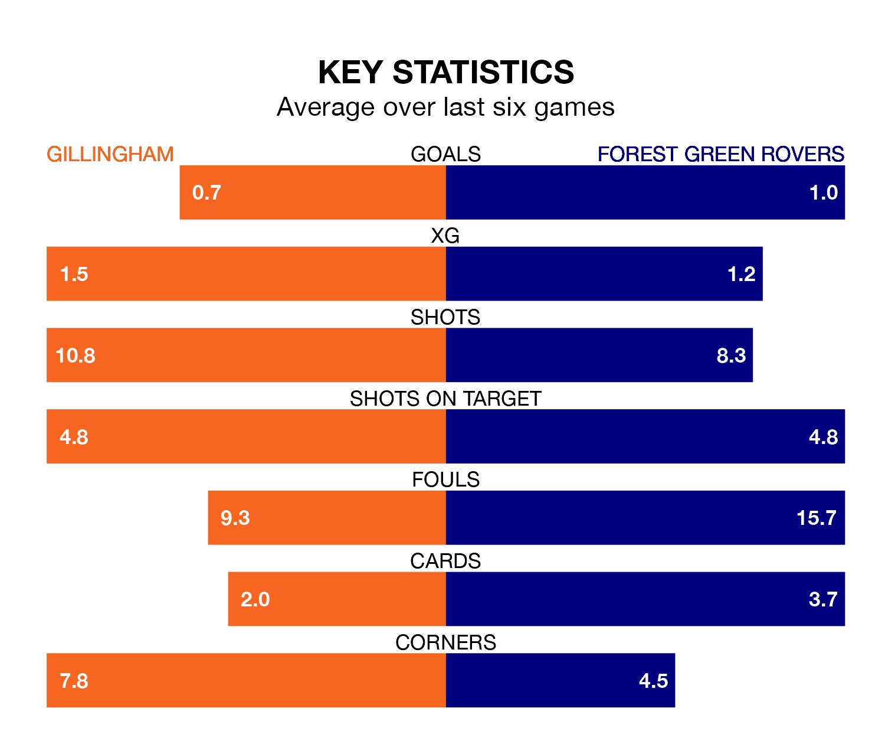

Gillingham host Forest Green Rovers at the MEMS Priestfield Stadium on Saturday on the back of three consecutive wins in EFL League Two.
Gillingham have picked up 10 points from their last six games, and they face a Green side who lost their last match, and have collected three points from the last possible 18.
Forest Green are bottom of the table after 26 games, of which they have won four and drawn six, earning 18 points.
Gillingham are 16 places ahead of Rovers in eighth, with 13 wins and two draws putting them on 41 points.
In Jake Turner, the Gills can rely on one of the league's safest pair of hands. He has kept 10 clean sheets in his 26 appearances this season, and no 'keeper has prevented the opposition scoring more often in EFL League Two.
In the Green's net, Luke Daniels has three clean sheets in 15 games. He has conceded a goal every 54 minutes, 40% more often than the 75 minutes between goals for Turner.
With 23 goals in 26 games so far this season, the hosts are the league's lowest scorers with 0.9 goals per game. But they are conceding fewer than average too, letting in 31 goals at a rate of 1.2 per game.
The away side are also below average scorers, with 1.0 goal per game, compared to a league average of 1.5. They have conceded 1.8 goals per game.
Gillingham's last match was on January 13, a 2-1 win against Accrington Stanley, with Conor Masterson and Macauley Bonne getting the goals for the Gills.
Forest Green lost 2-0 against Harrogate Town last time out, also on January 13.
Saturday's match will be refereed by Craig Hicks, who has taken charge of three EFL League Two games so far this season, issuing no red cards and booking 10 players. He has awarded one penalty.
The last Forest Green game Hicks refereed was the 2-1 win at home against Crawley Town on October 28. He is yet to oversee a match featuring Gillingham this season.
Updated: 06:13 (UTC), 18/01/24